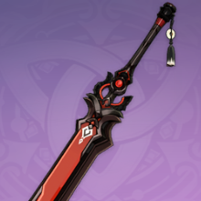

| 名称 | 类型 | 稀有度 | 获取途径 | 初始基础属性1 | 初始基础属性2 | 攻击力（MAX） | 副属性（MAX） | 技能 | |
|---|---|---|---|---|---|---|---|---|---|
| 无锋剑 | 单手剑 | 初始武器赠送, 宝箱, 商店购买 | 无 | 基础攻击力23 | 无：无 | ||||
| 银剑 | 单手剑 | 宝箱, 商店购买 | 无 | 基础攻击力33 | 无：无 | ||||

|
吃虎鱼刀 | 单手剑 | 宝箱 | 攻击力7.7% | 基础攻击力39 | 401 | 攻击力35.2% | 决：攻击命中时，有50%的概率对单个敌人造成240%/280%/320%/360%/400%攻击力的伤害。该效果每15/14/13/12/11秒只能触发一次。 | |

|
黎明神剑 | 单手剑 | 祈愿, 任务, （海盗密保孔雀羽之章） | 暴击伤害10.2% | 基础攻击力39 | 401 | 暴击伤害46.9% | 激励：生命值高于90%时，暴击率提升14%/17.5%/21%/24.5%/28% | |

|
旅行剑 | 单手剑 | 宝箱 | 防御力6.4% | 基础攻击力40 | 448 | 防御力29.3% | 旅程：获得元素晶球或元素微粒时，恢复1%/1.25%/1.5%/1.75%/2%生命值。 | |

|
暗铁剑 | 单手剑 | 与璃月港小吃摊摊主快刀陈对话“鱼卖得怎样”, 对话 | 元素精通31 | 基础攻击力39 | 401 | 元素精通141 | 过载：触发超载、超导、感电或雷元素扩散反应后的12秒内，攻击力提高20%/25%/30%/35%/40%. | |

|
冷刃 | 单手剑 | 祈愿 | 攻击力7.7% | 基础攻击力39 | 401 | 攻击力35.2% | 止水融冰：对处于水元素或冰元素影响下的敌人，造成的伤害提高112%/15%/18%/21%/24%。 | |

|
飞天御剑 | 单手剑 | 祈愿 | 元素充能效率11.3% | 基础攻击力38 | 354 | 元素充能效率52.1% | 决心：施放元素爆发后，提高12%/15%/18%/21%/24%攻击力和移动速度，持续15秒。 | 黑剑 | 单手剑 | 纪行 | 暴击率6.0% | 基础攻击力42 | 510 | 暴击率27.6% | 「正义」：普通攻击与重击造成的伤害提升20%/25%/30%/35%/40%；此外普通攻击和重击暴击时，恢复等同于攻击力60/70/80/90/100%的生命值。该效果每5秒至多发动一次。 |
| 试作斩岩 | 单手剑 | 锻造, 冒险等阶10级奖励获取, 完成星之归还活动获取 | 物理伤害加成7.5% | 基础攻击力44 | 565 | 物理伤害加成34.5% | 碎石：普通攻击或重击命中时，攻击力（原为基础攻击力）和防御力提高4%/5%/6%/7%/8%，持续6秒，最多叠加4层。该效果每0.3秒只能触发一次。 | ||
| 腐殖之剑 | 单手剑 | 活动 | 元素充能效率10.0% | 基础攻击力42 | 510 | 元素充能效率45.9% | 无尽的渴慕：元素战技造成的伤害增加16/20/24/28/32%，元素战技的暴击率提升6/7.5/9/10.5/12%。 | ||
| 暗巷闪光 | 单手剑 | 限定祈愿 | 元素精通12 | 基础攻击力45 | 620 | 元素精通55 | 街巷游侠：造成的伤害提升12%/15%/18%/21%/24%，受到伤害后的5秒内失效。 | ||
 |
宗室长剑 | 单手剑 | 商城兑换 | 攻击力9.0% | 基础攻击力42 | 510 | 攻击力41.3% | 专注：攻击造成伤害时，暴击率提升8%/10%/12%/14%/16%，最多堆叠5次。攻击造成暴击后，移除已有的专注效果。 | |
| 铁蜂刺 | 单手剑 | 锻造 | 元素精通36 | 基础攻击力42 | 510 | 元素精通165 | 注能之刺：造成元素伤害后的6秒内，角色造成的伤害提高6%/7.5%/9%/10.5%/12%，该效果最多叠加2层。该效果每1秒可以触发一次。 | ||
| 笛剑 | 单手剑 | 祈愿 | 攻击力9.0% | 基础攻击力42 | 510 | 攻击力41.3% | 和弦：普通攻击或重击命中时，会获得一个和音。积攒了5个和音后，释放音律的力量，对周围的敌人造成100%/125%/150%/175%/200%攻击力的伤害。和音最多存在30秒，每0.5秒至多获得1个和音。 | ||
| 祭礼剑 | 单手剑 | 祈愿 | 元素充能效率13.3% | 基础攻击力41 | 454 | 元素充能效率61.3% | 气定神闲：元素战技造成伤害时，有40%/50%/60%/70%/80%概率重置该技能的冷却时间，该效果每30/26/22/19/16秒只能触发一次。 | ||
| 匣里龙吟 | 单手剑 | 祈愿 | 攻击力9.0% | 基础攻击力42 | 510 | 攻击力41.3% | 踏火息雷：对处于火元素或雷元素影响下的敌人，造成的伤害提高20%/24%/28%/32%/36%。 | ||
| 降临之剑 | 单手剑 | PS4特典奖励 | 攻击力7.7% | 基础攻击力39 | 401 | 攻击力35.2% | 降世：普通攻击与重击命中敌人后有50%概率在小范围内造成200%攻击力的伤害。该效果每10秒只能触发一次;此外，旅行者装备降临之剑时，攻击力提升66点。
=该武器技能效果初始即满级，无法精炼。 | ||
| 西风剑 | 单手剑 | 祈愿 | 元素充能效率13.3% | 基础攻击力41 | 454 | 元素充能效率61.3% | 顺风而行：攻击造成暴击时，有60%/70%/80%/90%/100%的几率产生少量元素微粒，能为角色恢复6点元素能量。该效果每12/10.5/9/7.5/6秒只能触发一次。 | ||
| 黑岩长剑 | 单手剑 | 商城兑换 | 暴击伤害8.0% | 基础攻击力44 | 565 | 暴击伤害36.8% | 乘胜追击：击败敌人后，攻击力提升12%/15%/18%/21%/24%，持续30秒。该效果至多叠加三层，每层持续时间独立。 | ||
| 磐岩结绿 | 单手剑 | 限定祈愿 | 暴击率9.6% | 基础攻击力44 | 542 | 暴击率44.1% | 护国的无垢之心：生命值提升20%/25%/30%/35%/40%。此外，基于装备该武器的角色生命值上限的1.2%/1.5%/1.8%/2.1%/2.4%,获得攻击力加成。 | ||
| 风鹰剑 | 单手剑 | 祈愿 | 物理伤害加成9.0% | 基础攻击力48 | 674 | 物理伤害加成41.3% | 西风之鹰的抗争：攻击力提高20%/25%/30%/35%/40%；受到伤害时触发：高扬抗争旗号的西风鹰之魂苏醒，恢复同等与攻击力的100%/115%/130%/145%/160%生命值，并对周围的敌人造成200%/230%/260%/290%/320%攻击力的伤害。该效果每15秒只能触发一次。 | 斫峰之刃 | 单手剑 | 限定祈愿 | 攻击力10.8% | 基础攻击力46 | 608 | 百分比攻击力49.6% | 金璋皇极：护盾强效提升20%/25%/30%/35%/40%。攻击命中后的8秒内，攻击力提升4%/5%/6%/7%/8%。该效果至多可叠加5层，每0.3秒只能触发一次。此外，处于护盾庇护下时，该效果的攻击力提升效果提高100%。 |
| 苍古自由之誓 | 单手剑 | 限定祈愿 | 元素精通1 | 基础攻击力1 | 尚未公布：尚未公布 | ||||
| 天空之刃 | 单手剑 | 祈愿 | 元素充能效率12.0% | 基础攻击力46 | 608 | 元素充能效率55.1% | 穿刺高天的利齿：暴击率提升4%/5%/6%/7%/8%；施放元素爆发时，获得破空之势：移动速度提升10%，攻击速度提升10%，普通攻击与重击命中时，额外造成20%/25%/30%/35%/40%攻击力的伤害，持续12秒。 | ||
| 训练大剑 | 双手剑 | 初始武器赠送, 宝箱, 商店购买 | 无 | 基础攻击力23 | 无：无 | 佣兵重剑 | 双手剑 | 宝箱, 商店购买 | 无 | 基础攻击力33 | 无：无 |
 |
沐浴龙血的剑 | 双手剑 | 祈愿 | 元素精通41 | 基础攻击力38 | 354 | 元素精通187 | 踏火息雷：对处于火元素或雷元素影响下的敌人，造成的伤害提高12%/15%/18%/21%/24%。 | |
 |
白铁大剑 | 双手剑 | 宝箱 | 防御力9.6% | 基础攻击力39 | 401 | 防御力43.9% | 收割：击败敌人时，恢复8%/10%/12%/14%/16%生命值。 |  |
铁影阔剑 | 双手剑 | 祈愿 | 生命值7.7% | 基础攻击力39 | 401 | 生命35.2% | 不屈：生命值低于70%/75%/80%/85%/90%时，重击不会轻易被打断，并提高30%/35%/40%/45%/50%重击伤害。 |
 |
飞天大御剑 | 双手剑 | 孤云阁附近拔出, 宝箱 | 物理伤害加成9.6% | 基础攻击力39 | 401 | 物理伤害加成43.9% | 勇气：普通攻击和重击命中时，攻击力提高6%/7%/8%/9%/10%，持续6秒，最多叠加4层，该效果每0.5秒只能触发一次。 | |
 |
以理服人 | 双手剑 | 祈愿, 宝箱 | 攻击力7.7% | 基础攻击力39 | 401 | 攻击力35.2% | 有话直说：施放元素战技后，普通攻击和重击命中时会在小范围内额外造成60%/75%/90%/105%/120%攻击力的伤害。该效果持续15秒，伤害每3秒只能触发一次。 | |
| 雨裁 | 双手剑 | 祈愿 | 元素精通36 | 基础攻击力42 | 510 | 元素精通165 | 止水息雷：对处于水元素或雷元素影响下的敌人，造成的伤害提高20％/24%/28%/32%/36%。 | ||
 |
白影剑 | 双手剑 | 锻造 | 防御力11.3% | 基础攻击力42 | 510 | 防御力51.7% | 注能之锋：普通攻击和重击命中后，攻击力和防御力提高6%/7.5%/9%/10.5%/12%。该效果持续6秒，最多叠加4层，每0.5秒只能触发一次。 | |
 |
宗室大剑 | 双手剑 | 商城兑换 | 攻击力6.0% | 基础攻击力44 | 565 | 百分比攻击力27.6% | 专注：攻击造成伤害时，暴击率提升8%/10%/12%/14%/16%，最多堆叠5次。攻击造成暴击后，移除已有的专注效果。 | |
| 祭礼大剑 | 双手剑 | 祈愿 | 元素充能效率6.7% | 基础攻击力44 | 565 | 元素充能效率30.6% | 气定神闲：元素战技造成伤害时，有40%/50%/60%/70%/80%概率重置该技能的冷却时间，该效果每30/26/22/19/16秒只能触发一次。 | ||
|  | 黑岩斩刀 | 双手剑 | 商城兑换 | 暴击伤害12.0% | 基础攻击力42 | 510 | 暴击伤害55.1% | 乘胜追击：击败敌人后,攻击力提升12%/15%/18%/21%/24%,持续30秒。该效果至多叠加3层，每层持续时间独立。 | |
| 螭骨剑 | 双手剑 | 纪行 | 暴击率6.0% | 基础攻击力42 | 510 | 暴击率27.6% | 破浪：角色在场上时，每4秒提升6%/7%/8%/9%/10%造成的伤害，3%/2.7%/2.4%/2.2%/2%受到的伤害。该效果最多叠加5层，不随角色退场重置，受到伤害后会减少1层效果 | ||
| 雪葬的星银 | 双手剑 | 锻造, 任务 | 物理伤害加成7.5% | 基础攻击力44 | 565 | 物理伤害加成34.5% | 霜葬：普通攻击与重击命中敌人时，有60%/70%/80%/90%/100%概率在敌人上方生成恒冰晶核并坠落，造成80%/95%/110%/125%/140%攻击力的范围伤害。若敌人处于冰元素影响下，则造成200%/240%/280%/320%/360%攻击力的伤害。该效果每10秒至多触发一次。 | ||
| 试作古华 | 双手剑 | 锻造 | 攻击力6.0% | 基础攻击力44 | 565 | 百分比攻击力27.6% | 粉碎：普通攻击和重击命中时，有50%的概率对小范围内的敌人造成240%/300%/360%/420%/480%攻击力的额外伤害。该效果每15秒只能触发一次。 | 西风大剑 | 双手剑 | 祈愿 | 元素充能效率13.3% | 基础攻击力41 | 454 | 元素充能效率61.3% | 顺风而行：攻击造成暴击时，有60%/70%/80%/90%/100%的几率产生少量元素微粒，能为角色恢复6点元素能量。该效果每12/10.5/9/7.5/6秒只能触发一次。 | 钟剑 | 双手剑 | 祈愿 | 生命值9.0% | 基础攻击力42 | 510 | 生命值41.3% | 叛逆的守护者：受到伤害时，生成一个伤害吸收等同于生命上限20%/23%/26%/29%/32%的护盾，持续10秒或者直到护盾失效，每45秒只能触发一次。角色处于护盾庇护下时，造成的伤害提升12%/15%/18%/21%/24%。 |
| 千岩古剑 | 双手剑 | 限定祈愿 | 攻击力9.0% | 基础攻击力42 | 510 | 攻击力41.3% | 千岩诀·同心：队伍中每有一位璃月角色，装备该武器的角色便获得7%/8%/9%/10%/11%攻击力提升与3%/4%/5%/6%/7%暴击率提升。至多获得4层提升效果。 | ||
| 松籁响起之时 | 双手剑 | 限定祈愿 | 物理伤害加成4.9% | 基础攻击力49 | 741 | 物理伤害加成20.7% | 揭旗的叛逆之歌：飘游风中的「千年的大乐章」的一部分。攻击力提升16%/20%/24%/28%/32%；普通攻击或重击命中敌人时，角色获得一枚低语之符，每0.3秒内至多触发一次。拥有4枚低语之符时，将消耗所有低语之符，使附近队伍中所有角色获得持续12秒的「千年的大乐章·揭旗之歌」效果：普通攻击速度提升12%/15%/18%/21%/24%，攻击力提升20%/25%/30%/35%/40%。触发后20秒内，无法再次获得低语之符。「千年的大乐章」触发的多种数值效果中，同类数值效果不可叠加。 | ||
| 天空之傲 | 双手剑 | 祈愿 | 元素充能效率8% | 基础攻击力48 | 674 | 元素充能效率36.8% | 斩裂晴空的龙脊：造成的伤害提高8%/10%/12%/14%/16%;施放元素爆发后:普通攻击和重击命中时会发出真空刃，对路径上的敌人造成80%/100%/120%/140%/160%攻击力的伤害，持续20秒或直至发出8次真空刃。 | ||
| 无工之剑 | 双手剑 | 限定祈愿 | 攻击力10.8% | 基础攻击力46 | 608 | 百分比攻击力49.6% | 金璋皇极：护盾强效提升20%/25%/30%/35%/40%。攻击命中后的8秒内，攻击力提升4%/5%/6%/7%/8%。该效果至多可叠加5层，每0.3秒只能触发一次。此外，处于护盾庇护下，该效果的攻击力提升效果提高100%。 | ||
| 狼的末路 | 双手剑 | 祈愿 | 攻击力10.8% | 基础攻击力46 | 608 | 百分比攻击力49.6% | 如狼般狩猎者：攻击力提高20%/25%/30%/35%/40%；攻击命中生命值低于30%的敌人时，队伍中所有成员的攻击力提高40%/50%/60%/70%/80%，持续12秒。该效果30秒只能触发一次。 | ||
| 猎弓 | 弓 | 宝箱, 初始武器赠送, 商店购买 | 无 | 基础攻击力23 | 无：无 | ||||
 |
历练的猎弓 | 弓 | 宝箱, 商店购买 | 无 | 基础攻击力33 | 无：无 | |||
 |
信使 | 弓 | 宝箱 | 暴击伤害6.8% | 基础攻击力40 | 448 | 暴击伤害31.2% | 飞矢传书：瞄准射击时，若命中要害，则额外造成100%/125%/150%/175%/200%攻击力的伤害，该伤害必定暴击。此效果每10秒只能触发一次。 |  |
弹弓 | 弓 | 祈愿, 宝箱 | 暴击率6.8% | 基础攻击力38 | 354 | 暴击率31.2% | 弹弓：普通攻击和瞄准射击时，箭矢若在发射后的0.3秒内击中敌人，则造成的伤害增加36%/42%/48%/54%/60%；否则，造成的伤害下降10%。 |
 |
反曲弓 | 弓 | 宝箱 | 生命值10.2% | 基础攻击力38 | 354 | 生命值46.9% | 收割：击败敌人时，恢复8%/10%/12%/14%/16%生命值。 |  |
神射手之誓 | 弓 | 祈愿 | 暴击伤害10.2% | 基础攻击力39 | 401 | 暴击伤害46.9% | 精准：针对要害造成的伤害提升24%/30%/36%/42%/48%。 |
 |
鸦羽弓 | 弓 | 祈愿 | 元素精通20 | 基础攻击力40 | 448 | 元素精通94 | 踏火止水：对处于火元素或水元素影响下的敌人，造成的伤害提高12%/15%/18%/21%/24%。 | 黑岩战弓 | 弓 | 商城兑换 | 暴击伤害8.0% | 基础攻击力44 | 565 | 暴击伤害36.8% | 乘胜追击：击败敌人后,攻击力提升12%/15%/18%/21%/24%,持续30秒。该效果至多叠加3层,每层持续时间独立。 |
| 幽夜华尔兹 | 弓 | 限定祈愿「神铸赋形」 | 元素精通1 | 基础攻击力1 | 尚未公布：尚未公布 | ||||
| 试作澹月 | 弓 | 锻造 | 攻击力9.0% | 基础攻击力42 | 510 | 攻击力41.3% | 离簇不归：瞄准射击时，若命中要害，则提升10%移动速度与36%/45%/54%/63%/72%攻击力，持续10秒。 | ||
| 宗室长弓 | 弓 | 商城兑换 | 攻击力9.0% | 基础攻击力42 | 510 | 攻击力41.3% | 专注：攻击造成伤害时，暴击率提升8%/10%/12%/14%/16%，最多堆叠5次。攻击造成暴击后，移除已有的专注效果。 | ||
| 暗巷猎手 | 弓 | 限定祈愿 | 攻击力6% | 基础攻击力44 | 565 | 百分比攻击力27.6% | 街巷伏击：装备该武器的角色处于队伍后台时，每1秒角色造成的伤害提升2%/2.5%/3%/3.5%/4%,最多通过这种方式获得20%/25%/30%/35%/40%的伤害提升；在场上超过4秒后，上述伤害提升效果每1秒会流失4%/5%/6%/7%/8%，直到降低至0%。 | ||
| 祭礼弓 | 弓 | 祈愿 | 元素充能效率6.7％ | 基础攻击力44 | 565 | 元素充能效率30.6% | 气定神闲：元素战技造成伤害时，有40％/50%/60%/70%/80%的概率重置该技能的冷却时间，该效果每30/26/22/19/16秒只能触发一次。 | ||
| 苍翠猎弓 | 弓 | 纪行 | 暴击率6.0% | 基础攻击力42 | 510 | 暴击率27.6% | 苍翠之风：普通攻击与重击命中时，有50%几率生成一个风之眼，持续吸引周围敌人，并对其中的敌人每0.5秒造成40%/50%/60%/70%/80%攻击力的伤害。该效果持续4秒，每14/13/12/11/10秒至多触发一次。 | ||
| 绝弦 | 弓 | 祈愿 | 元素精通36 | 基础攻击力42 | 510 | 元素精通165 | 无矢之歌：元素战技与元素爆发的伤害提高24％/30%/36%/42%/48%。 | 风花之颂 | 弓 | 活动 | 元素精通36 | 基础攻击力42 | 510 | 元素精通165 | 风花之愿：施放元素战技时，获得风之花的悠古愿望加持，攻击力提升16%/20%/24%/28%/32%，持续6秒 |
| 钢轮弓 | 弓 | 锻造 | 物理伤害加成15.0% | 基础攻击力41 | 454 | 物理伤害加成69.0% | 注能之矢：普通攻击和瞄准攻击命中时，提升4%/5%/6%/7%/8%攻击力与1.2%/1.5%/1.8%/2.1%/2.4%普通攻击速度。该效果持续6秒，最多可以叠加4层，每0.3秒只能触发一次。 | ||
| 西风猎弓 | 弓 | 祈愿, 任务, （巨龙与自由之歌） | 元素充能效率13.3％ | 基础攻击力41 | 454 | 元素充能效率61.3% | 顺风而行：攻击造成暴击时，有60%/70%/80%/90%/100%的几率产生少量元素微粒，能为角色恢复6点元素能量。该效果每12/10.5/9/7.5/6秒只能触发一次。 | 弓藏 | 弓 | 祈愿 | 攻击力9.0% | 基础攻击力42 | 510 | 攻击力41.3% | 速射弓斗：普通攻击伤害提升40%/50%/60%/70%/80%，重击伤害下降10%。 | 终末嗟叹之诗 | 弓 | 限定祈愿 | 元素充能效率12.0% | 基础攻击力46 | 608 | 元素充能效率55.1% | 离别的思念之歌：飘游风中的「千年的大乐章」的一部分。元素精通提高60/75/90/105/120点；元素战技或元素爆发命中敌人时，角色获得一枚追思之符，每0.2秒内至多触发一次，角色处于队伍后台也能触发。拥有4枚追思之符时，将消耗所有追思之符，使附近的队伍中所有角色获得持续12秒的「千年的大乐章·别离之歌」效果：元素精通提高100/125/150/175/200点，攻击力提升20%/25%/30%/35%/40%。触发后20秒内，无法再次获得追思之符。「千年的大乐章」触发的多种数值效果中，同类数值效果不可叠加。 |
| 天空之翼 | 弓 | 祈愿 | 暴击率4.8% | 基础攻击力48 | 674 | 暴击率22.1% | 回响长天的诗歌：·暴击伤害提高20%/25%/30%/35%/40%；攻击命中时有60%/70%/80%/90%/100%概率造成125%攻击力的小范围物理伤害，该效果每4秒/3.5秒/3秒/2.5秒/2秒只能触发一次。 | ||
| 阿莫斯之弓 | 弓 | 祈愿 | 攻击力10.8% | 基础攻击力46 | 608 | 百分比攻击力49.6% | 矢志不忘：·普通攻击和重击造成的伤害提升12%/15%/18%/21%/24%;箭矢发射后每经过0.1秒，伤害还会提升8%/10%/12%/14%/16%。至多提升5次。 | ||
| 学徒笔记 | 法器 | 初始武器赠送, 宝箱, 商店购买 | 无 | 基础攻击力23 | 无：无 | ||||
| 口袋魔导书 | 法器 | 宝箱, 商店购买 | 无 | 基础攻击力33 | 无：无 | ||||
| 异世界行记 | 法器 | 宝箱, （蒙德区域宝箱） | 元素充能效率8.5% | 基础攻击力39 | 401 | 元素充能效率39.0% | 能量沐浴：获得元素微粒或元素晶球时，恢复1%/1.25%/1.5%/1.75%/2%生命值。 | ||
| 翡玉法球 | 法器 | 祈愿 | 元素精通20 | 基础攻击力40 | 448 | 元素精通94 | 激流：触发蒸发、感电、冰冻、或水元素扩散反应后的12秒内，攻击力提高20%/25%/30%/35%/40%。 | ||
| 甲级宝珏 | 法器 | 宝箱, （璃月区域宝箱） | 暴击率3.4% | 基础攻击力40 | 448 | 暴击率15.6% | 奔袭战术：击败敌人后的15秒内，移动速度和攻击力提升12%/14%/16%/18%/20%。 | ||
 |
魔导绪论 | 法器 | 祈愿 | 元素精通41 | 基础攻击力38 | 354 | 元素精通187 | 止水息雷：对处于水元素或雷元素影响下的敌人，造成的伤害提高12%/15%/18%/21%/24%. | |
 |
讨龙英杰谭 | 法器 | 祈愿 | 生命值7.7% | 基础攻击力39 | 401 | 生命35.2% | 传承：主动切换角色时，新登场的角色攻击力提升24%/30%/36%/42%/48%，持续10秒。该效果每20秒只能触发一次。 | |
| 昭心 | 法器 | 祈愿 | 攻击力12.0% | 基础攻击力41 | 454 | 攻击力55.1% | 回响：普通攻击与重击命中时，有50%几率发射一枚昭心法球，造成240%/270%/300%/330%/360%攻击力伤害，至多在敌人之间弹射4次。该效果每12/11/10/9/8秒至多触发一次。 | ||
| 万国诸海图谱 | 法器 | 锻造 | 元素精通24 | 基础攻击力44 | 565 | 元素精通110 | 注能之卷：触发元素反应后的10秒内，获得8%/10%/12%/14%/16%元素伤害加成，该效果最多可叠加2层 | ||
| 暗巷的酒与诗 | 法器 | 限定祈愿 | 元素充能效率6.7% | 基础攻击力44 | 565 | 元素充能效率30.6% | 变化万端：普通攻击命中敌人后，冲刺或替代冲刺的能力消耗的体力降低14%/16%/18%/20%/22%，持续5秒。此外，使用冲刺或替代冲刺的能力后，攻击力提升20%/25%/30%/35%/40%，持续5秒。 | ||
 |
宗室秘法录 | 法器 | 商城兑换 | 攻击力6.0% | 基础攻击力44 | 565 | 百分比攻击力27.6% | 专注：攻击造成伤害时，暴击率提升8%/10%/12%/14%/16%，最多堆叠5次。攻击造成暴击后，移除已有的专注效果。 | |
| 流浪乐章 | 法器 | 祈愿 | 暴击伤害12.0％ | 基础攻击力42 | 510 | 暴击伤害55.1% | 登场乐：角色登场时，随机获得一个主题曲，持续10秒。每30秒只能触发一次。宣叙调：攻击力提升60%/75%/90%/105%/120%；咏叹调：全元素伤害提升48%/60％/72%/84%/96%；间奏曲：元素精通提升240/300/360/420/480。 | ||
 |
匣里日月 | 法器 | 纪行 | 暴击率6.0% | 基础攻击力42 | 510 | 暴击率27.6% | 日月辉：普通攻击命中后的6秒内，元素战技与元素爆发的伤害提高20%/25%/30%/35%/40%；元素战技与元素爆发命中后的6秒内，普通攻击的伤害提高20%/25%/30%/35%/40%。 | |
| 西风秘典 | 法器 | 祈愿 | 元素充能效率10.0％ | 基础攻击力42 | 510 | 元素充能效率45.9% | 顺风而行：攻击造成暴击时，有60％/70％/80％/90％/100％的几率产生少量元素微粒，能为角色恢复6点元素能量。该效果每12/10.5/9/7.5/6秒只能触发一次 | ||
| 忍冬之果 | 法器 | 锻造 | 攻击力9.0% | 基础攻击力42 | 510 | 攻击力41.3% | 霜葬：普通攻击与重击命中敌人时，有60%/70%/80%/90/100%概率在敌人上方生成恒冰晶核并坠落，造成80%/95%/110%/125%/140%攻击力的范围伤害。若敌人处于冰元素影响下，则造成200%/240%/280%/320%/360%攻击力的伤害。该效果每10秒至多触发一次。 | ||
| 试作金珀 | 法器 | 锻造 | 生命值9.0% | 基础攻击力42 | 510 | 生命值41.3% | 炊金：施放元素爆发后6秒内，每2秒恢复4/4.5/5/5.5/6点元素能量，队伍中的所有角色每2秒恢复4%/4.5%/5%/5.5%/6%生命值。 | ||
 |
祭礼残章 | 法器 | 祈愿 | 元素精通48 | 基础攻击力41 | 454 | 元素精通221 | 气定神闲：元素战技造成伤害时，有40%/50%/60%/70%/80%的概率重置该技能的冷却时间，该效果每30/26/22/19/16秒只能触发1次。 | |
| 黑岩绯玉 | 法器 | 商城兑换 | 暴击伤害12.0% | 基础攻击力42 | 510 | 暴击伤害55.1% | 乘胜追击：击败敌人后，攻击力提升12%/15%/18%/21%/24%，持续30秒。该效果至多叠加3层，每层持续时间独立。 | ||
|
嘟嘟可的故事集 | 法器 | 限定祈愿「神铸赋形」 | 元素精通1 | 基础攻击力1 | 尚未公布：尚未公布 | |||
| 四风原典 | 法器 | 祈愿 | 暴击率7.2% | 基础攻击力46 | 608 | 暴击率33.1% | 无边际的眷顾：移动速度提高10%；在场上每4秒获得8%/10%/12%/14%/16%元素伤害加成。该效果最多叠加4层，角色倒下或离场后清空。 | ||
| 天空之卷 | 法器 | 祈愿 | 攻击力7.2% | 基础攻击力48 | 674 | 百分比攻击力33.1% | 浮游四方的灵云：元素伤害加成提升12%/15%/18%/21%/24%；普通攻击命中时，有50%的概率获得高天流云的青睐，在15秒内主动攻击附近的敌人，造成等同于160%/200%/240%/280%/320%攻击力的伤害。该效果每30秒只能触发一次。（备注：快照锁面板，攻击6次，多本书可叠加） | ||
| 尘世之锁 | 法器 | 限定祈愿 | 攻击力10.8% | 基础攻击力46 | 608 | 百分比攻击力49.6% | 金璋皇极：护盾强效提升20%/25%/30%/35%/40%。攻击命中后的8秒内，攻击力提升4%/5%/6%/7%/8%。该效果至多可叠加5层，每0.3秒只能触发一次。此外，处于护盾庇护下时，该效果的攻击力提升效果提高100%。 | ||
| 新手长枪 | 长柄武器 | 初始武器赠送, 宝箱, 商店购买 | 无 | 基础攻击力23 | 无：无 | ||||
| 铁尖枪 | 长柄武器 | 宝箱, 商店购买 | 无 | 基础攻击力33 | 无：无 | ||||
 |
黑缨枪 | 长柄武器 | 祈愿 | 生命值10.2% | 基础攻击力38 | 354 | 生命值46.9% | 克柔：对史莱姆类敌人造成的伤害增加40%/50%/60%/70%/80%。 | |
 |
钺矛 | 长柄武器 | 宝箱 | 攻击力5.1% | 基础攻击力40 | 448 | 攻击力22.1% | 沉重：对普通攻击命中的敌人造成160%/200%/240%/280%/320%攻击力的额外伤害。该效果每10秒只能触发一次。 | |
 |
白缨枪 | 长柄武器 | 宝箱（璃月）, 宝箱 | 暴击率5.1% | 基础攻击力39 | 401 | 暴击率23.4% | 锐利：普通攻击造成的伤害提升24%/30%/36%/42%/48%。 | |
| 流月针 | 长柄武器 | 锻造 | 物理伤害加成7.5% | 基础攻击力44 | 565 | 物理伤害加成34.5% | 注能之针：获得元素微粒或元素晶球后的5秒内，普通攻击和重击额外造成20%/25%/30%/35%/40%攻击力伤害。 | ||
| 匣里灭辰 | 长柄武器 | 祈愿 | 元素精通48 | 基础攻击力41 | 454 | 元素精通221 | 踏火止水：对于处于水元素或火元素影响下的敌人，造成的伤害提高20%/24%/28%/32%/36%。 | ||
| 千岩长枪 | 长柄武器 | 限定祈愿 | 攻击力6.0% | 基础攻击力44 | 565 | 百分比攻击力27.6% | 千岩诀·同心：队伍中每有一位璃月角色，装备该武器的角色便获得7%/8%/9%/10%/11%攻击力提升与3%/4%/5%/6%/7%暴击率提升。至多获得4层提升效果。 | ||
| 试作星镰 | 长柄武器 | 锻造 | 元素充能效率10.0% | 基础攻击力42 | 510 | 元素充能效率45.9% | 嗜魔：施放元素战技后，普通攻击和重击造成的伤害提高8%/10%/12%/14%/16%。该效果持续12秒，最多叠加2层。 | ||
| 西风长枪 | 长柄武器 | 祈愿 | 元素充能效率6.7% | 基础攻击力44 | 565 | 元素充能效率30.6% | 顺风而行：攻击造成暴击时，有60%/70%/80%/90%/100%的几率产生少量元素微粒，能为角色恢复6点元素能量。该效果每12/10.5/9/7.5/6秒只能触发一次。 | ||
 |
黑岩刺枪 | 长柄武器 | 商城兑换 | 暴击伤害12.0% | 基础攻击力42 | 510 | 暴击伤害55.1% | 乘胜追击：击败敌人后，攻击力提升12%/15%/18%/21%/24%，持续30秒。该效果至多叠加3层，每层持续时间独立。 | |
| 决斗之枪 | 长柄武器 | 纪行 | 暴击率8.0% | 基础攻击力41 | 454 | 暴击率36.8% | 角斗士：身边至少有2个敌人时，获得16%/20%/24%/28%/32%攻击力提升与16%/20%/24%/28%/32%防御力提升；身边的敌人少于2个时，获得24%/30%/36%/42%/48%攻击力提升。 | ||
| 龙脊长枪 | 长柄武器 | 任务, 锻造 | 物理伤害加成15.0% | 基础攻击力41 | 454 | 物理伤害加成69.0% | 霜葬：普通攻击与重击命中敌人时，有60%/70%/80%/90%/100%概率在敌人上方生成恒冰晶核并坠落，造成80%/95%/110%/125%/140%攻击力的范围伤害。若敌人处于冰元素影响下，则造成200%/240%/280%/320%/360%攻击力的伤害。该效果每10秒至多触发一次。 | ||
| 宗室猎枪 | 长柄武器 | 商城兑换 | 攻击力6.0% | 基础攻击力44 | 565 | 百分比攻击力27.6% | 专注：攻击造成伤害时，暴击率提升8%/10%/12%/14%/16%,最多堆叠5次。攻击造成暴击后，移除已有的专注效果。 | ||
| 护摩之杖 | 长柄武器 | 限定祈愿 | 暴击伤害14.4% | 基础攻击力46 | 608 | 暴击伤害66.2% | 无羁的朱赤之蝶：生命值提升20%/25%/30%/35%/40%。此外，提供基于装备该武器的角色生命值上限的0.8%/1%/1.2%/1.4%/1.6%，获得攻击力加成。当装备该武器的角色生命值低于50%时，进一步获得1%/1.2%/1.4%/1.6%/1.8%最大生命值上限的攻击力提升。 | ||
| 和璞鸢 | 长柄武器 | 祈愿 | 暴击率4.8% | 基础攻击力48 | 674 | 暴击率22.1% | 昭理的鸢之枪：命中敌人时自身攻击力提高3.2%/3.9%/4.6%/5.3%/6%，持续6秒，最高可以叠加7层。该效果每0.3秒最多触发一次。满层状态时伤害提升12%/15%/18%/21%/24%。 | ||
| 天空之脊 | 长柄武器 | 祈愿 | 元素充能效率8% | 基础攻击力48 | 674 | 元素充能效率36.8% | 斫断黑翼的利齿：暴击率提升8%/10%/12%/14%/16%， 普通攻击速度提升12%, 此外，普通攻击与重击命中敌人时，有50%概率触发真空刃，在小范围内造成额外40%/55%/70%/85%/100%攻击力的伤害。该效果每2秒至多触发一次。 | ||
| 贯虹之槊 | 长柄武器 | 限定祈愿 | 攻击力10.8% | 基础攻击力46 | 608 | 百分比攻击力49.6% | 金璋皇极：护盾强效提升20%/25%/30%/35%/40%。攻击命中后的8秒内，攻击力提升4%/5%/6%/7%/8%。该效果至多可叠加5层，每0.3秒只能触发一次。此外，处于护盾庇护下时，该效果的攻击力提升效果提高100%。 |